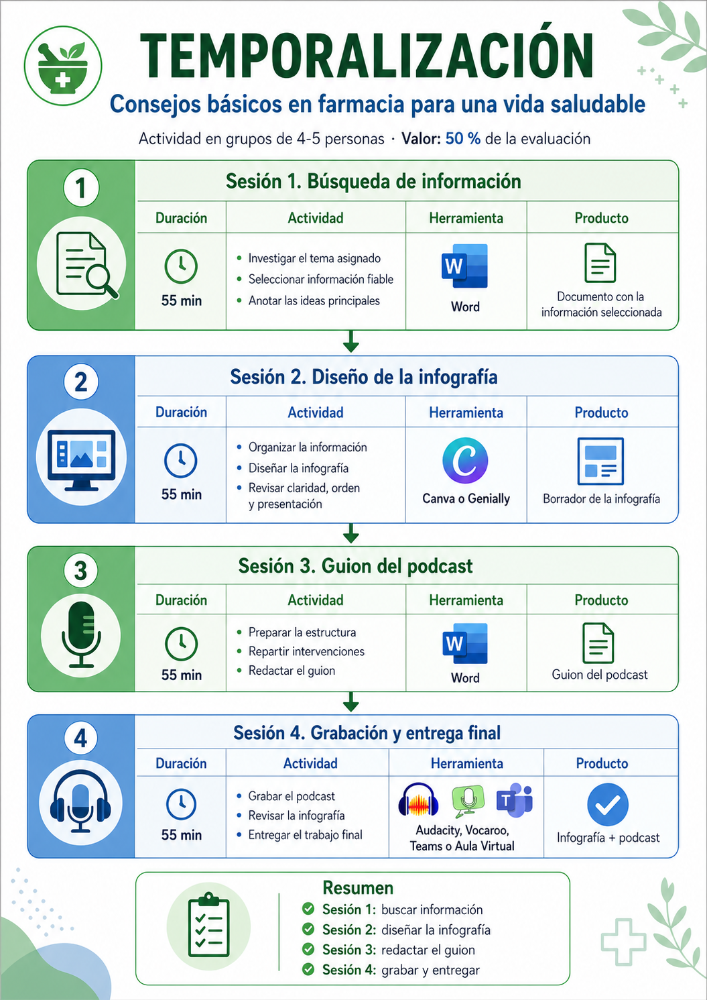

Temporalización y tareas

Sesión 1. Investigar información fiable- 13 abril de 19:35 a 20:30
En esta sesión vais a buscar información sobre vuestro tema y seleccionar las ideas más importantes. Para hacerlo bien, debéis consultar fuentes fiables, actualizadas y comprensibles.
Una buena fuente debe tener autoría clara, información sanitaria rigurosa y un lenguaje adecuado. No toda la información de internet es válida para un trabajo de educación para la salud.
- Objetivo
Comprender el tema y seleccionar solo la información necesaria para explicar consejos de salud en la oficina de farmacia. - Preguntas de repaso
-¿Qué información es realmente importante para un paciente?
-¿Qué fuente os parece más fiable?
-¿Qué ideas debéis explicar con palabras sencillas? - Entrega en Word.
Sesión 2. - Diseño de la infografía- 20 abril de 19:35 a 20:30
En esta sesión se realizará la infografía visual. El tríptico debe ser claro, breve, útil y atractivo. Debe ayudar a cualquier paciente a comprender el mensaje principal.. La infografía debe incluir:
-Título claro.
- Imagen o icono relacionado con el tema.
- Explicación breve.
-Consejos prácticos.
-Ideas principales bien organizadas.
- Herramientas: Canva o Genially
- Entrega del enlace en Teams o PDF
Sesión 3. - Elaboración del guion del podcast- 27 abril de 19:35 a 20:30
En esta sesión se preparará el guion del podcast. El audio debe durar entre 3 y 5 minutos y explicar el tema de forma clara, ordenada y comprensible. Un buen podcast educativo debe tener una introducción, una explicación sencilla, consejos prácticos y un cierre final.
- Estructura recomendada del podcast.
- Introducción: presentación del tema, personas del grupo, docente del módulo y ciclo.
- Desarrollo: explicación breve y clara.
- Consejos: recomendaciones principales
- Cierre: recordatorio final o mensaje de prevención
- Tarea de la sesión: El grupo redactará el guion en Word de Microsoft Office 365. Debe quedar claro qué parte va a decir cada integrante.
- Producto de la sesión: Guion completo del podcast a entregar en tarea de Teams.
- Se podrá realizar ya la grabación del podcast.
Sesión 4. - Grabación podcast y entrega final - 11 de mayo de 19:35 a 20:30
En esta última sesión se grabará el podcast y se revisará la infografía antes de la entrega. Es importante comprobar que el mensaje se entiende bien, que el audio se escucha con claridad y que el trabajo está completo.
- Herramientas para grabar: Audacity, Vocaroo, grabadora del móvil y otras herramientas válidas.
- Tiempo de podcast: 3 a 5 minutos.
- Entrega por tarea del Teams en MP3 y el enlace de la infografía a través del Teams. Se puede hacer un vídeo dónde conste la infografía y el podcast.